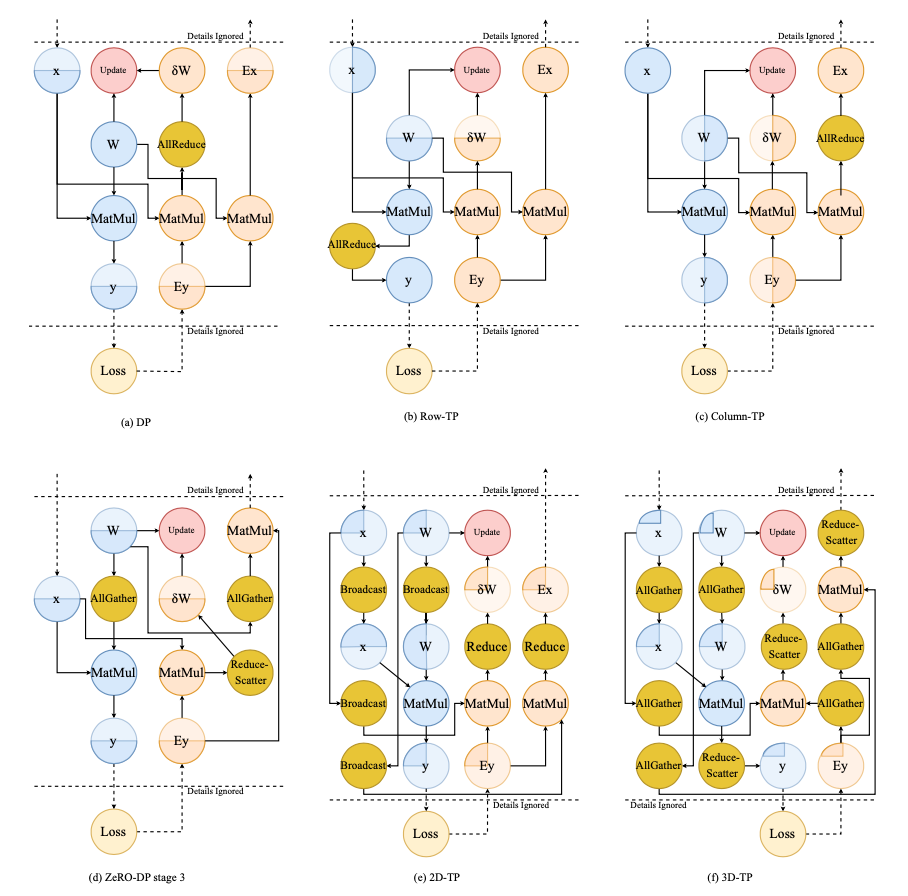
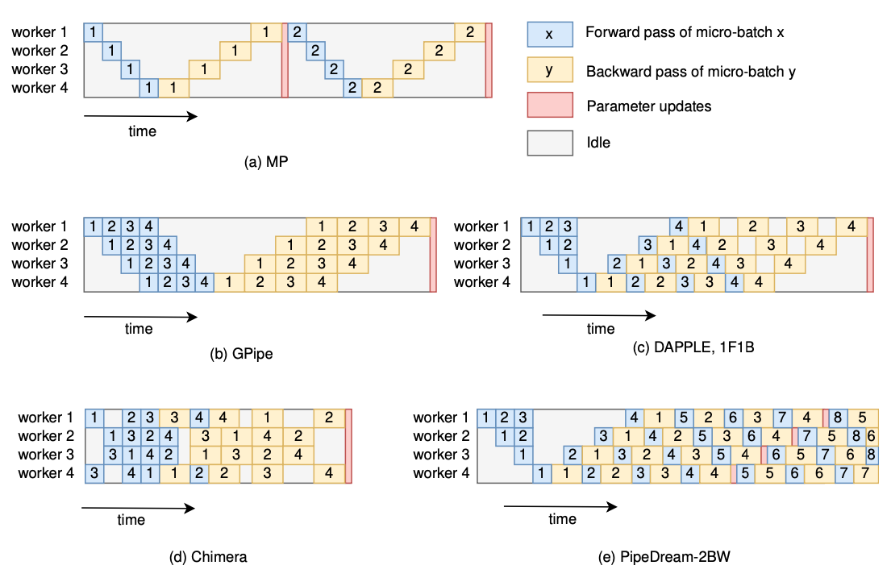

papers
Pollux
Pollux: Co-adaptive Cluster Scheduling for Goodput-Optimized Deep Learning
Aurick Qiao et al. Petuum, Inc, CMU, UCB, MBZUAI.
Award: Jay Lepreau Best Paper
集群调度的目标是为任务分配资源使得
- 训练时间小
- 集群资源利用率高
- 同时保证公平
一般的调度场景是提交任务时声明所需要的资源， 但是在深度学习任务中，资源分配之后如何高效地利用这些资源取决于如 batch size 和 learning rate 之类的配置， 这些配置一般是不属于调度器管理的。
由此，推出
Pollux: Co-adaptive Cluster Scheduler for DL
Pollux, 一个深度学习模型训练的互适应集群调度器。
它自动且动态地，
- 从整个集群性能和公平性的角度进行资源分配
- 动态地为每个训练任务调整 batch size 和 learning rate
什么是互适用呢？
- 从整个集群的角度做调度决策，同时在任务级别来调整配置参数
- 单个任务会根据分配到的资源进行动态地调整
结果：减少用户对任务的手动配置，缩短平均训练时常达 37-50%.
背景
分布式-深度学习模型训练-数据并行
- mini-batch 组装 [batch size]
- 计算梯度 [计算密集]
- 梯度聚合 [通信密集]
- 更新参数 [learning rate]
batch size 对系统吞吐量的影响
总体而言，大 batch size 能够获得更高的吞吐，同时，这个关系
- 次/非线性 sub-linearly
- 一定量后，系统吞吐量不再随 gpu 数量提高
问题在与多少 gpu 合适呢？这取决于
- 模型结构
- 集群硬件
- batch size 等等
batch size 对实际效率（statistical efficiency）的影响
batch size 并不是越大越好，因为
- 需要同时调整 lr 确保模型质量（quality）[应该包括精度等指标]，而且很困难
- 增大 batch size 会降低训练的实际效率
- 大 batch size 训练的模型往往泛化能力较差
对于同样的数据吞吐量，大 batch size 所需要的训练步数较少（二者乘积一定）， 但从模型实际效率上看，大 batch size 需要更多步数才能取得同样的效果。
整体训练性能
经过以上分析可以看出，系统的吞吐和实际的训练效率相对于 batch size 存在经典的 trade-off 曲线关系， 所以，我们需要也可以找出他们的交叉点以获得优化的整体训练性能。
然而，这个优化的 batch size 在不同的训练阶段是不一样的（即随时间变化），最多能差 10 倍多 [McCandlish et al. 2018]， 即需要随训练进度动态地调整 batch size 以获得最优。
集群调度
- 所需的 GPU 的取决于 batch size，反过来，合适的 batch size 取决于分配到的 GPU 资源
- 集群的 GPU 分配是一个全局的决策，需要考虑公平和竞争
- batch size 的选取还取决于具体的任务，如拓展性和实际效率等
用户在提交任务时决定上述配置是困难的，所以由集群调度器来调整这些配置参数可以优化深度学习模型的训练。
Pollux 集群调度器
- 计算模型训练性能
- 计算最优的资源需求、batch size、learning rate
- 重新调整资源分配，相应地调整任务的 batch size 和 learning rate
Key Idea: Goodput, not Throughput
Pollux 的优化目标是新定义的深度学习训练性能指标 goodput
其中，
- 资源分配向量，如 a_n = #GPU, 表示节点 n 上分配的 gpu 数
- 每个 gpu 的 batch size
- 梯度聚合步数
- 总 batch size，
会在训练过程中由 Pollux 自动计算, 表示的是系统吞吐量（examples/second）， 表示实际训练效率（progress/example）.
系统吞吐
其中，
- 每步训练的时间
- 计算梯度的时间
- 网络通信的时间
- 梯度聚合的步数
- 计算和通信重合度
Pollux 自动，
- 确定合适的 gpu 数量和 batch size
- 使用梯度聚合提高 batch size 达到 gpu 显存上限
- 把任务尽可能放置（pack）在尽量少的节点上以减少网络负载
实际训练效率
每一个任务的实际训练效率可以表示为
其中，
- 表示用户定义的 baseline batch size
- 表示 batch size
- 梯度噪声 [McCandlish et al. 2018]
用户可以选择较小的初始 batch size ，Pollux 会选择不同的 bs 去平衡系统吞吐和实际训练效率。
关于梯度噪声 Gradient noise scale
- 较大的梯度噪声 -> 使用较大的 mini-batch 能够获得较高的实际效率
- 接近收敛的低信噪比 -> 更好的实际训练效率
Pollux 能够在不进行提前训练的情况下使用 计算出任务的 GOODPUT.
任务优化
在特定分配 gpu 为 a 的前提下，计算最优
改变 batch size 的同时，learning rate 也需要同步改变。 Pollux 为用户提供更新策略
- Linear scaling
- Square-root scaling
- AdaScale (Johnson et al. 2020)
集群优化
优化目标
其中，
p 是可变参数，用于控制任务间的公平性。
找到分配矩阵 , 表示节点 n 上分配给任务 j 的 gpu 数量。
- 对 A 的寻找使用 metaheuristic algorithm
- 调度要避免频繁的重新分配
- 避免分布式任务共享节点
Pollux 效果评估
Pollux 带来的主要收益是在共享集群上自动配置任务。
重点评估目标：即使任务已经给定理想的静态配置，Pollux 仍然能够相比于传统集群调度器有所提升。 包括以下方面，
- 真实的 Microsoft 深度学习分布式训练集群 (Jeon et al. 2019).
- 不同场景训练任务混合：图像分类、目标检测、语音识别、问答、推荐
- 手动配置 gpu 数量、batch size、learning rate、梯度聚合参数 (不使用Pollux，设定强baseline)
实验数据表明 Pollux 能比专家配置的任务缩短 37-50% 的平均训练时间。
总结
- Pollux 同时从集群和任务的角度对任务参数进行优化
- Pollux 引入 goodput 概念，一种结合系统吞吐和实际效率的衡量标准
- Pollux 实测缩短 37-50% 的平均训练时间
Scaling distributed training with adaptive summation
Saeed Maleki et al. Microsoft Research
Key point

Reference
Adaptation 调研
分布式训练的参数调整基本有以下共识：
- learning rate 需要根据 batch size 调整，以保证训练速度和收敛速度
- learning rate 需要在不同的训练阶段进行调整以保证收敛速度 这个方向早期已经有比较多的研究，包括
- Adam 2015，在 variance 较大时使用较小的 lr
- LARS 2017，在每一层上根据 wieghts 和 gradient 适配 lr
- LARM 2019，LARS + Adam
Summary
最新的一些参数适配相关的研究进展：
| 方法 | 年份 | 适用 | 作用于 | Key Idea | 会议 | 开源 |
|---|---|---|---|---|---|---|
| GNS | 2018 | |||||
| K-FAC | 2019 | - | gradients | Gradient second-order | cvpr2019 | |
| AdaScale | 2020 | SGD | lr | Gradient variance | ICML2020 | |
| Resource Elasticity... | 2020 | tf | framework | Worker performance | mlsys2020 | |
| Kungfu | 2020 | tf/torch | - | implementation | osdi20 | KungFu |
| Pollux | 2021 | osdi21 | adaptdl | |||
| Adasum | 2021 | Momentum-SGD, Adam, and LAMB | gradients | combine gradient | mlsys2021 | horovod |
| DeepPool | 2022 | burst parallelism | gpu multiplexing | mlsys2022 | DeepPool |
An Empirical Model of Large-Batch Training Sam McCandlish et al. OpenAI 总结：文章提出了 gradient noise scale (GNS) 指标，
- GNS 较小，保持 batch size
- GNS 较大，增大 batch size GNS 定义如下：
其中：
- true gradient
- true Hessian at parameter values
- covariance matrix
AdaScale SGD: A Scale-Invariant Algorithm for Distributed Training
Tyler B. Johnson et al. APPLE
Key: Gradient variance
总结：adascale 根据 gradient variance 来调整 learning rate，提供稳定算法保证在不同的 batch size 下都能找到合适的 lr 保证快速收敛。
Scaling distributed training with adaptive summation
Saeed Maleki et al. Microsoft Research
总结：adasum 利用 gradients 自身的数学性质，提出了一种新的 combine 方法，使得 merge 结果受 outlier 影响较小，更加“合理”，从而加快收敛。 算法公式
示意图
Large-Scale Distributed Second-Order Optimization Using Kronecker-Factored Approximate Curvature for Deep Convolutional Neural Networks
Kazuki Osawa et al. Tokyo Institute of Technology, NVIDIA
Key: Gradient second-order metrics
总结：通过计算 Fisher 矩阵二阶信息来更新梯度，每一步的计算速度会慢于sgd，但收敛所需步数减少，特别是在large scale 的场景，整体效率接近。
Resource Elasticity in Distributed Deep Learning
Andrew Or et al. Princeton University, Google AI
autoscaling engine/system
总结：文章对分布式场景深度学习场景下的弹性系统进行了比较全面的梳理，着墨较多在弹性触发条件，但是对系统实现没有什么深入描述，这块创新性存疑。文中提到了依赖 tensorflow 和 horovod，姑且认为，默认实现方案为 horovod 吧。 文中涉及到了类似慢节点检测的机制（STRAGGLER DETECTION）。
KungFu: Making Training in Distributed Machine Learning Adaptive
Luo Mai et al. Imperial College London
总结：kungfu 提供了一个统一的框架/库用来在分布式训练场景下进行不同 adaptation 操作，包括 api、monitor、control 等部分。
- 提供 adaption policies 来定义不同 adaption
- 内置 monitoring，使得依赖各种 metric 做 adapt 决策变得容易
- 分布式参数 adpating 机制：提供弹性、异步 collective
Pollux: Co-adaptive Cluster Scheduling for Goodput-Optimized Deep Learning
Aurick Qiao et al. Petuum, Inc, CMU, UCB, MBZUAI.
总结：提出 goodput 指标用于计算优化配置，包括资源和参数 lr、bs。兼容其他如 adascale 策略。
Efficient Strong Scaling Through Burst Parallel Training
Seo Jin Park et al.
DeepPool key ideas: 引入 foreground/background jobs
- burst parallelism
- GPU multiplixing ： gpu 共享
batch-optimal scaling : find (throughtput , sample efficienncy) for best time to accuracy
- Optimizing time-to-accuracy requires small per-GPU batches at large scale
- Strong scaling and small per-GPU batches are more effective with fast networks
- None of the approaches achieve perfect linear scaling
实现特点：
- 控制粒度到 layer 级别
- 针对静态图，生成 parallel training plan
- stage 级别分配 gpu
- backgroud job 为单机低优任务，现实场景中可能比较难有这样类型任务
总结：依靠并行调度和 gpu 共享技术，引入foreground/background 区分任务优先级，计算最优资源需求和参数配置以获得高资源利用率和任务完成时效。 有点偏向于自动并行和 gpu 共享的混合产物。
strong scaling : hold global batch size constant, decrease per-GPU batch size weak scaling: increase the global batch size correspondingly, per-GPU batch size kept constant
Deep Gradient Compression
Deep Gradient Compression: Reducing the Communication Bandwidth for Distributed Training
Yujun Lin et. al. Tsinghua University, ICLR 2018
Gradient exchange require hight bandwidth,
- high latency
- low throughput
- poor connnection
Since 99.9% of the gradient exchange in SGD are redundant, propose deep gradient compression (DGC) to reduce communication bandwidth.
To preserve accuracy,
- momentum correction
- local gradient clipping
- momentum factor masking, alleviate staleness
- warm-up training
improving local gradient accumulation and overcomming the staleness effect
DGC
- pushes the gradient compression ratio to up to 600×
- not need to change the model structure
- no loss of accuracy
How
- only gradients larger than a threshold are transmitted
- accumulate the rest of the gradients locally, local gradient accumulation is equivalent to increasing the batch size over time
deep-gradient-compression github
DGC naively perform fine-grained (i.e., element-wise) top-k to select gradients, and thus the communication will suffer from increased allgather data volume as #nodes increases.
CSC modified the process with coarse-grained sparsification: gradients are partioned into chunks, allreduce the gradient chunks selected based on allreduced L1-norm of each chunk, which gets rid of the allgather and solves the problem.
Optimizing Network Performance for Distributed DNN Training on GPU Clusters: ImageNet/AlexNet Training in 1.5 Minutes
Peng Sun et. al. SenseTime 2019
Communication backend: GradientFlow
- ring-based allreduce
- mixed-precision training
- computation/communication overlap
- lazy allreduce: fusing multiple communication operations
- coarse-grained sparse communication: only transmitting important gradient chunks
and also,
- momentum SGD correction
- warm-up dense training
1-Bit Stochastic Gradient Descent and its Application to Data-Parallel Distributed Training of Speech DNNs
Frank Seide et. al. MRA, Tsinghua, MR. INTERSPEECH 2014
1-BitSGDwithErrorFeedback
GRACE: A Compressed Communication Framework for Distributed Machine Learning
Hang Xu et. al. 2021
Auto Parallel
A Survey on Auto-Parallelism of Neural Networks Training
Peng Liang et. al. National University of Defense Technology
Abstract.
DL --> large model --> distributed training --> heterogeneous cluster --> auto-parallelism --> large scale DL model
- basic parallelism schemes, communication cost and memory consumption
- current works, strategies, common methods
- promising trends
Introduction
Parallelism strategy
- intra-operator parallelism: data parallelism, tensor parallelism (intra-layer model parallelism)
- inter-operator parallelism: inter-layer model parallelism, pipeline parallelism
Hybrid parallelism
- data + model + pipeline
- Megatron-LM, DeepSpeed(3D parallelism)
Manual --> Auto
All practicable works: a few combinations of parallelism schemes, weak scalability
- e.g. cost model
- automatic parallelism search space can be further expanded
- heterogeneous devices, communication pace/topology
Challenges
- detailed analysis of different parallelism schemes
- trade-offs between different parallelism schemes
- load-balance across heterogeneous devices
- optimization of network communication
- trade-off between runtime and strategy performance in finding strategy
Parallelism schemes
Data parallelism
- Vanilla DP
- ZeRO-Powered DP
- Communication of DP, Centralized/Decentralized architecture
ZeRO-DP
- three stages: 1 partition optimizer states, 2 partition gradients and optimizer states, 3 partition parameters
- stage 1 and 2: reduce-scatter accumulated gradients, stage 3: all-gather updated parameters
- solve redundancy problem with 50% more communication volume (all-gather)
Model parallelism
- Intra-layer MP, tensor parallelism, partition weight tensor
- Inter-layer MP

Pipeline parallelism
The partition pattern of PP is the same as that of MP
- inter-layer MP = PP
- PP = well scheduled pipelined MP
- overlap computation, solve low-utility of MP
PipeDream (Microsoft), GPipe (Google)

Strategy Searching Methods for Auto-Parallelism
- NP-hard problem
- classic-algorithm-based v.s. machine-learning-based
Classic-algorithm based methods
- recursive algorithm
- dynamic programming algorithm
- integer linear programming algorithm
- breath-first-search (BFS) algorithm
Machine-learning based methods
- Monte-Carlo Markov Chain (MCMC)
- Monte-Carlo Tree Search (MCTS)
- reinforcement learning
Conclusion
Accelerating strategy searching
- grouping
- profiling-base cost model
- using heuristics
Optimizing parallelism strategies
- topology-aware computation
- topology-aware communication
Supporting more parallelism schemes
Gradient Descent
An overview of gradient descent optimization algorithms
Sebastian Ruder, Insight Centre for Data Analytics, NUI Galway Aylien Ltd., Dublin, 2017
Gradient Descent
Multi-variable function , defined differentiable in a neighborhood of a point , for small enough,
leads to .
If convex and Lipschitz, converge to a local mimimum.
Optimization : Momentum
Let ,
The momentum term increases for dimensions whose gradients point in the same directions and reduces updates for dimensions whose gradients change directions. As a result, we gain faster convergence and reduced oscillation.
Optimization : Nesterov
Version with correction,
This anticipatory update prevents us from going too fast and results in increased responsiveness, which has significantly increased the performance of RNNs on a number of tasks.
Adagrad
It adapts the learning rate to the parameters, performing larger updates for infrequent and smaller updates for frequent parameters. For this reason, it is well-suited for dealing with sparse data.
Application : learned to recognize cats in Youtube videos; GloVe word embeddings.
Adadelta
Adadelta is an extension of Adagrad that seeks to reduce its aggressive, monotonically decreasing learning rate. Instead of accumulating all past squared gradients, Adadelta restricts the window of accumulated past gradients to some fixed size w.
RMSprop
RMSprop and Adadelta have both been developed independently around the same time stemming from the need to resolve Adagrad’s radically diminishing learning rates. RMSprop in fact is identical to the first update vector of Adadelta.
Adam
Adaptive Moment Estimation (Adam) is another method that computes adaptive learning rates for each parameter. In addition to storing an exponentially decaying average of past squared gradients like Adadelta and RMSprop, Adam also keeps an exponentially decaying average of past gradients , similar to momentum.
Scheduling
OSDI 2021
Pollux: Co-adaptive Cluster Scheduling for Goodput-Optimized Deep Learning
Aurick Qiao et al. Petuum, Inc, CMU, UCB. Cite 14
Award: Jay Lepreau Best Paper
Oort: Efficient Federated Learning via Guided Participant Selection
Fan Lai et al. University of Michigan. Cite 17
PET: Optimizing Tensor Programs with Partially Equivalent Transformations and Automated Corrections
Haojie Wang et al. Tsinghua, CMU, FB. Cite 4
Privacy Budget Scheduling
Tao Luo et al. Columbia University, Microsoft Research. Cite 2
OSDI 2020
Providing SLOs for Resource-Harvesting VMs in Cloud Platforms
Pradeep Ambati et al. Microsoft Azure, Microsoft Research.
The CacheLib Caching Engine: Design and Experiences at Scale
Benjamin Berg et al. CMU, FB, MS
Twine: A Unified Cluster Management System for Shared Infrastructure
Chunqiang Tang et al. FB
FIRM: An Intelligent Fine-Grained Resource Management Framework for SLO-Oriented Microservices
Haoran Qiu et al. UIUC
Building Scalable and Flexible Cluster Managers Using Declarative Programming
Lalith Suresh et al. VMware, IST, UIUC ...
Protean: VM Allocation Service at Scale
Ori Hadary et al. MS
deep-gradient-compression
deep-gradient-compression github
配置
# configs/dgc/__init__.py
训练流程
# train.py
from dgc.horovod.optimizer import DistributedOptimizer
# from dgc.compression import DGCCompressor
compression = configs.train.compression()
# cpr_parameters 即 dgc 处理的范围
compression.initialize(cpr_parameters.items())
# from dgc.optim import DGCSGD
optimizer = configs.train.optimizer(model.parameters())
# Horovod: wrap optimizer with DistributedOptimizer.
optimizer = DistributedOptimizer(
optimizer, named_parameters=model.named_parameters(),
compression=compression,
backward_passes_per_step=configs.train.num_batches_per_step,
op=hvd.Average
)
# 训练基本循环 zero_grad -> loss.backward -> optimizer.step
# 特别注意这里多次 backward 才走一次 step 更新
model.train()
for step, (inputs, targets) in enumerate(...):
optimizer.zero_grad()
# 这里用了内置循环累积梯度，比直接使用大 batch 剩显存
# 注意这个 for 循环，对于 optimizer 里面理解 synchronize 过程非常重要
for b in range(0, step_size, batch_size):
_inputs = inputs[b:b+batch_size]
_targets = targets[b:b+batch_size]
_outputs = model(_inputs)
_loss = criterion(_outputs, _targets)
_loss.mul_(_r_num_batches_per_step)
_loss.backward()
loss += _loss.item()
optimizer.step()
Optimizer
# dgc/horovod/optimizer.py
class _DistributedOptimizer(torch.optim.Optimizer):
def __init__(self, ...):
# 初始化最后注册 通信 hook
self._register_hooks()
def _register_hooks(self):
for param_group in self.param_groups:
for p in param_group['params']:
if p.requires_grad:
# 注册函数只执行一次，这里 zero grad 不是每次调用 hook
p.grad = p.data.new(p.size()).zero_()
self._requires_update.add(p)
# 创建幽灵 tensor 来累积梯度，节点间同步，直至更新；显存占用翻倍？
p_tmp = p.expand_as(p)
grad_acc = p_tmp.grad_fn.next_functions[0][0]
# 注册 _make_hook 这个关键 hook
grad_acc.register_hook(self._make_hook(p))
self._grad_accs.append(grad_acc)
def _make_hook(self, p):
# 这个 hook 有一个计数器，_allreduce_delay, 根据对象 p 不一样可以取不一样的值
# 计数器不为零时跳过，这样可以让 grad 在本地累积，因为这个 hook 是做通信的
# 效果为这个 hook 在多次调用才会被执行一次
def hook(*ignore):
handle, ctx = None, None
self._allreduce_delay[p] -= 1
if self._allreduce_delay[p] == 0:
handle, ctx = self._allreduce_grad_async(p)
self._handles[p] = (handle, ctx)
return hook
# 然后主要流程 step
def step(self, closure=None):
self.synchronize()
return super(self.__class__, self).step(closure)
# step 调用 synchronize, 可以有跳过逻辑
def synchronize(self):
# 处理 hook 注册不成功，或者说 hook 没有被调用
# hook 被调用后会添加 self._handles
missing_p = self._requires_update - set(self._handles.keys())
for p in missing_p:
handle, ctx = self._allreduce_grad_async(p)
self._handles[p] = (handle, ctx)
# handle 为 None 的 hook 跳过又不跳过了？
# 需要注意 synchronize 函数每个 step 被调用，但不是每次 backward 都会被调用
# 在之前的 train 中有每个 step 会多次 backward，所以 grad 的 hook 会被多次调用，次数匹配
# 所以代码执行到这里 handle 应该是一次调用_allreduce_grad_async 如果不是就补上
for p, (handle, ctx) in self._handles.items():
if handle is None:
handle, ctx = self._allreduce_grad_async(p)
self._handles[p] = (handle, ctx)
# for 循环处理异步通信的结果
for p, (handle, ctx) in self._handles.items():
output = self._synchronize_(handle)
# 重置本地累积次数
self._allreduce_delay[p] = self.backward_passes_per_step
# 解压更新梯度
p.grad.set_(self._compression.decompress(output, ctx))
# 执行完毕，清理
self._handles.clear()
# 异步通信的 op，核心逻辑在 compression 中
def _allreduce_grad_async(self, p):
name = self._parameter_names.get(p)
tensor_compressed, ctx = self._compression.compress(p.grad, name)
handle = self._communicate_(tensor_compressed, name=name, op=self.op)
return handle, ctx
- hook 函数是一次注册，多次调用，所以
self._handles会不断被填充，每次 synchronize 后可以被 clear
# dgc/compression.py
class DGCCompressor:
def __init__(self, ...):
self.attributes = {}
def initialize(self, named_parameters):
# 工作范围
for name, param in named_parameters:
self.attributes[name] = (numel, shape, num_selects, num_samples, top_k_samples, sample_stride)
def _sparsify(self, tensor, name):
# 选出稀疏的 tensor 去通信
importance = tensor.abs()
mask = torch.ge(importance, threshold)
indices = mask.nonzero().view(-1)
num_indices = indices.numel()
# 这里实现上有个 for 循环确保选出的 topk 满足要求
indices = indices[:num_selects]
values = tensor[indices]
return values, indices, numel, shape, num_selects
def compress(self, tensor, name):
if self.compress_ratio < 1.0 and name in self.attributes:
# compress
tensor_compensated = self.memory.compensate(tensor, name, accumulate=True)
values, indices, numel, shape, num_selects = self._sparsify(tensor_compensated, name)
self.memory.update(name, (indices, ))
return tensor, ctx
else:
return tensor, ctx
def decompress(self, tensor, ctx):
name, numel, shape, vdtype, idtype, grad = ctx
if self.compress_ratio < 1.0 and name in self.attributes:
# 这里的 tensor 是个 tuple
# decompress
values, indices = tensor
# 把同步回来的稀疏 tensor 对应位置更新
# accumulate=True 处理 indices 中有重复的情况
grad.zero_().index_put_([indices], values, accumulate=True)
if self.op == Average:
grad.mul_(1. / self.world_size)
return grad.view(shape)
else:
return self.memory.compensate(tensor, name, accumulate=False)
# optimizer _communicate_
def communicate(self, tensor_compressed, name, op):
# 两个分支
if self.compress_ratio < 1.0 and name in self.attributes:
# dgc 分支，tensor_compressed 是 tuple，各个节点选的 topk index 不相同
# 所以使用 allgather 交换，然后各自解压、更新
return [allgather_async_(t, name=f'{name}.t{e}')
for e, t in enumerate(tensor_compressed)]
else:
# 普通分支，直接 allreduce 完整 tensor
return allreduce_async_(tensor_compressed, name=name, op=op)
# optimizer _synchronize_
def synchronize(self, handle):
# from horovod.torch.mpi_ops import synchronize as synchronize_
if isinstance(handle, (tuple, list)):
return [synchronize_(h) for h in handle]
else:
return synchronize_(handle)
为了保证精度文章中介绍了下面几种补偿策略
- momentum correction
- local gradient clipping
- momentum factor masking, alleviate staleness
- warm-up training
前三种策略在 Memory 实现
# dgc/memory.py
class DGCSGDMemory(Memory):
def compensate(self, grad, name, accumulate=True):
if self.gradient_clipping is not None:
grad = self.gradient_clipping(grad)
mmt = self.momentums[name]
if accumulate:
# Momentum Correction
vec = self.velocities[name]
if self.nesterov:
mmt.add_(grad).mul_(self.momentum)
vec.add_(mmt).add_(grad)
else:
mmt.mul_(self.momentum).add_(grad)
vec.add_(mmt)
return vec
else:
if self.nesterov:
mmt.add_(grad).mul_(self.momentum)
return mmt.add(grad)
else:
mmt.mul_(self.momentum).add_(grad)
return mmt.clone() # TODO: save this clone
def update(self, name, ctx):
indices = ctx[0]
if self.momentum_masking:
self.momentums[name].view(-1).index_fill_(0, indices, 0)
self.velocities[name].view(-1).index_fill_(0, indices, 0)